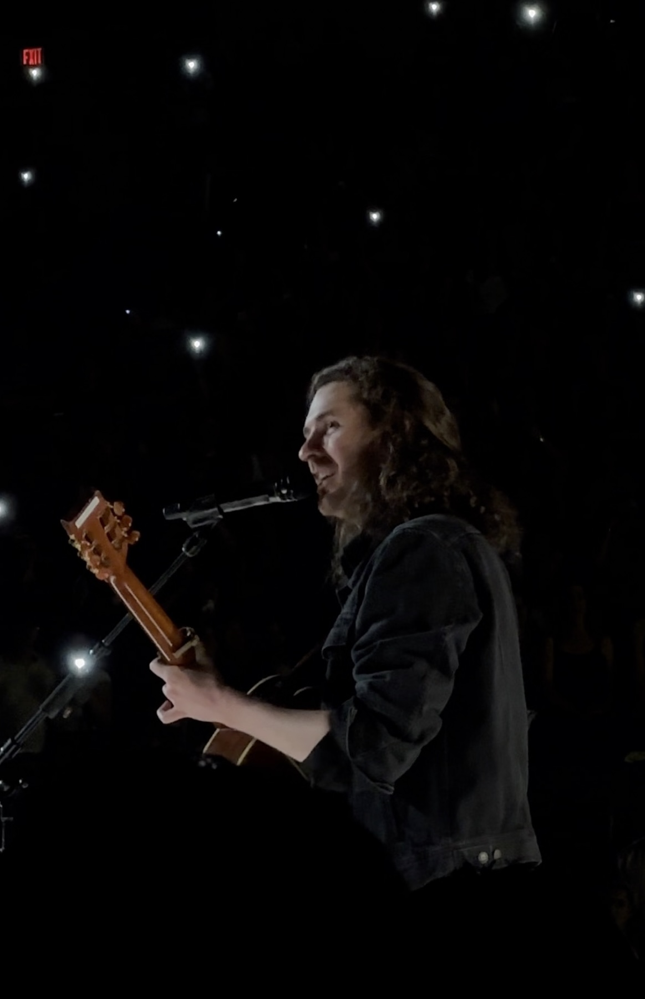
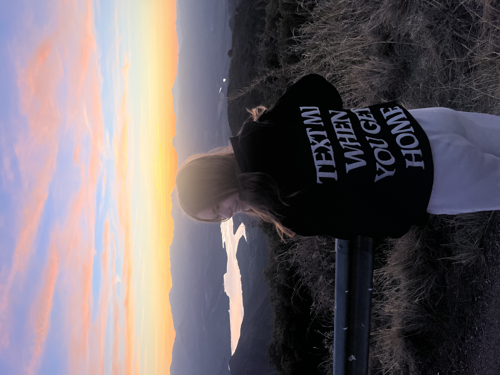
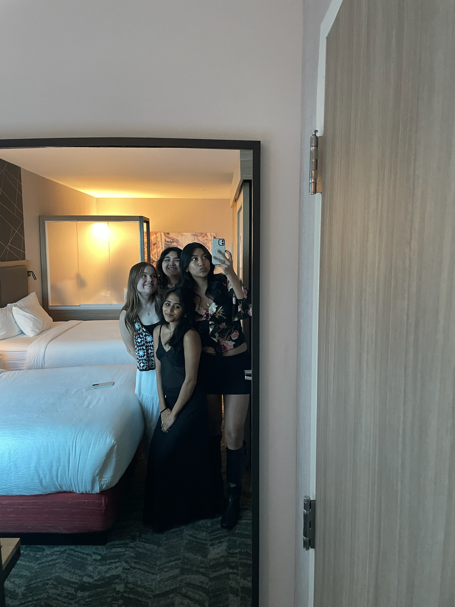
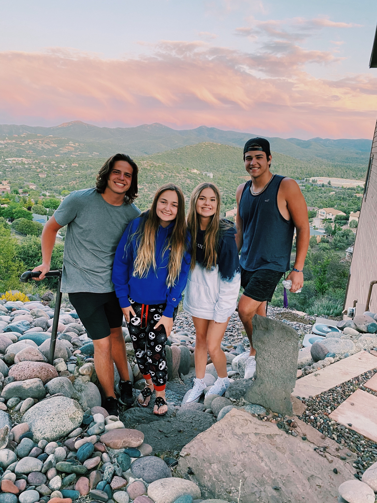
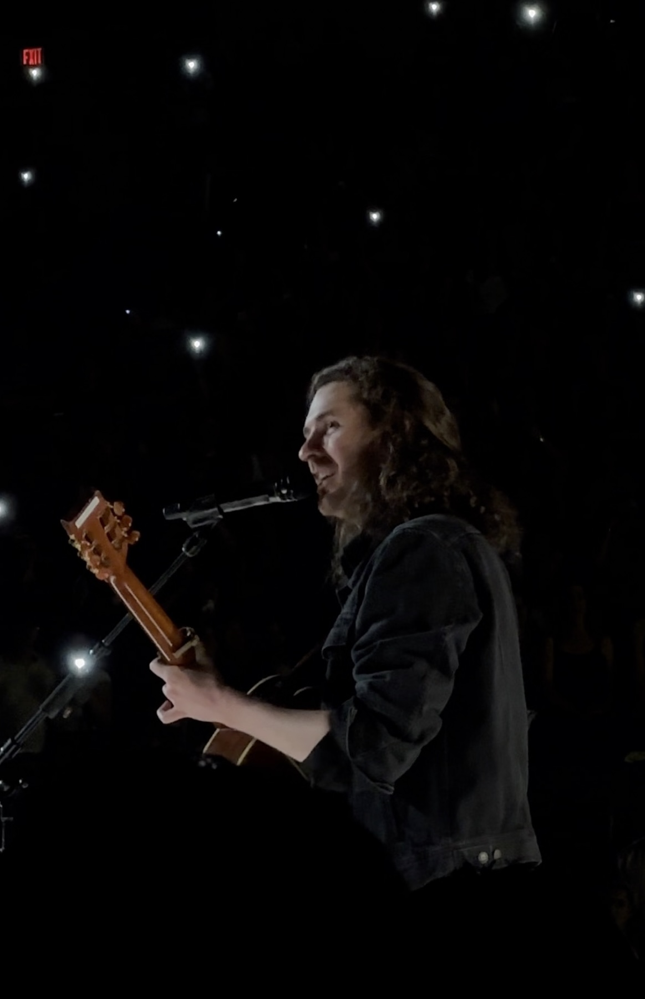
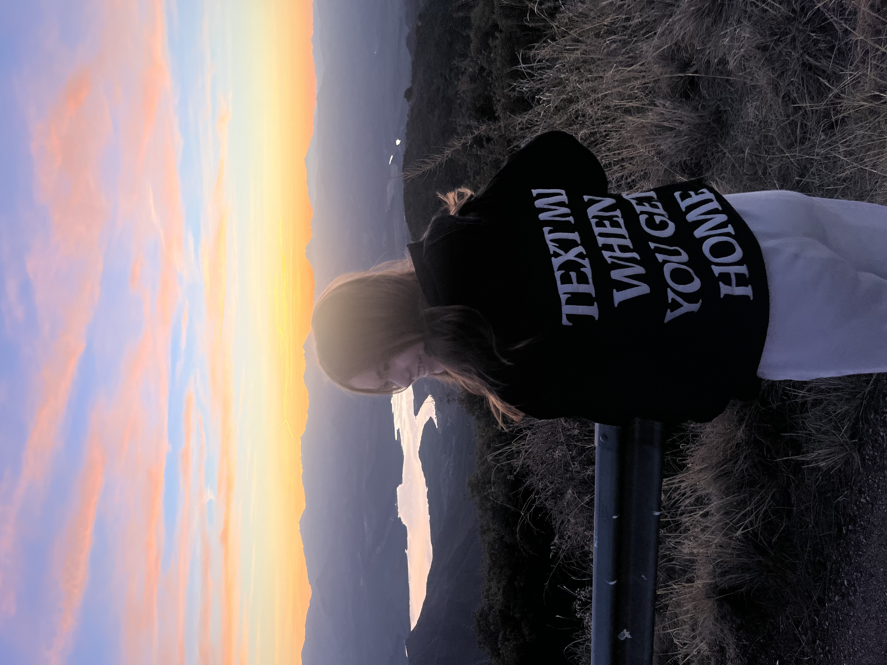
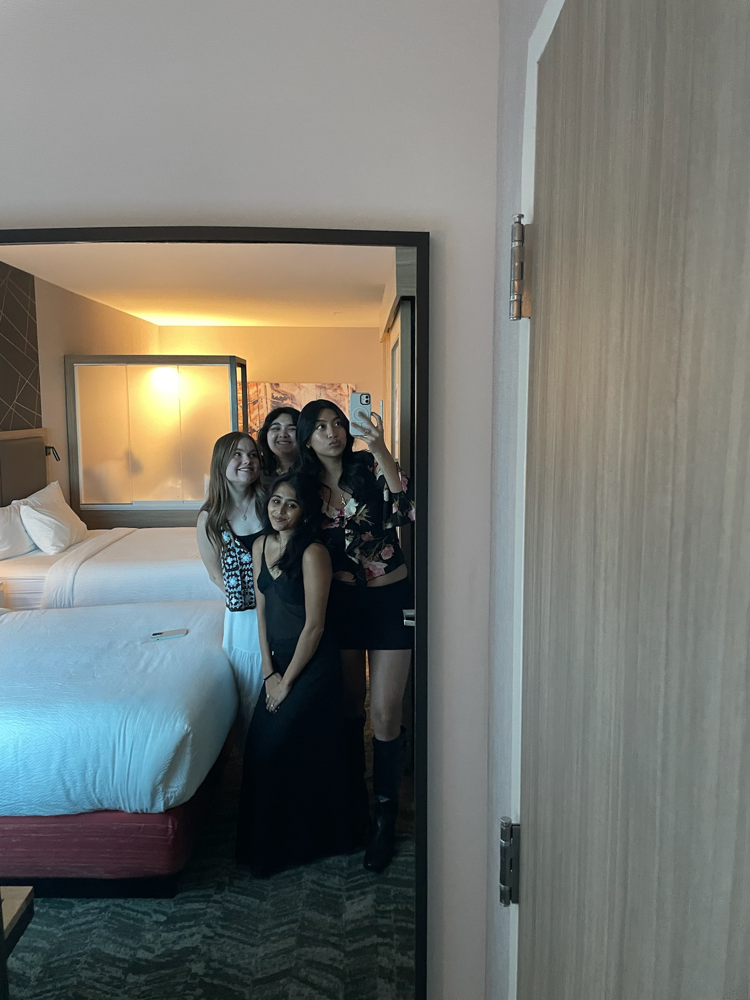
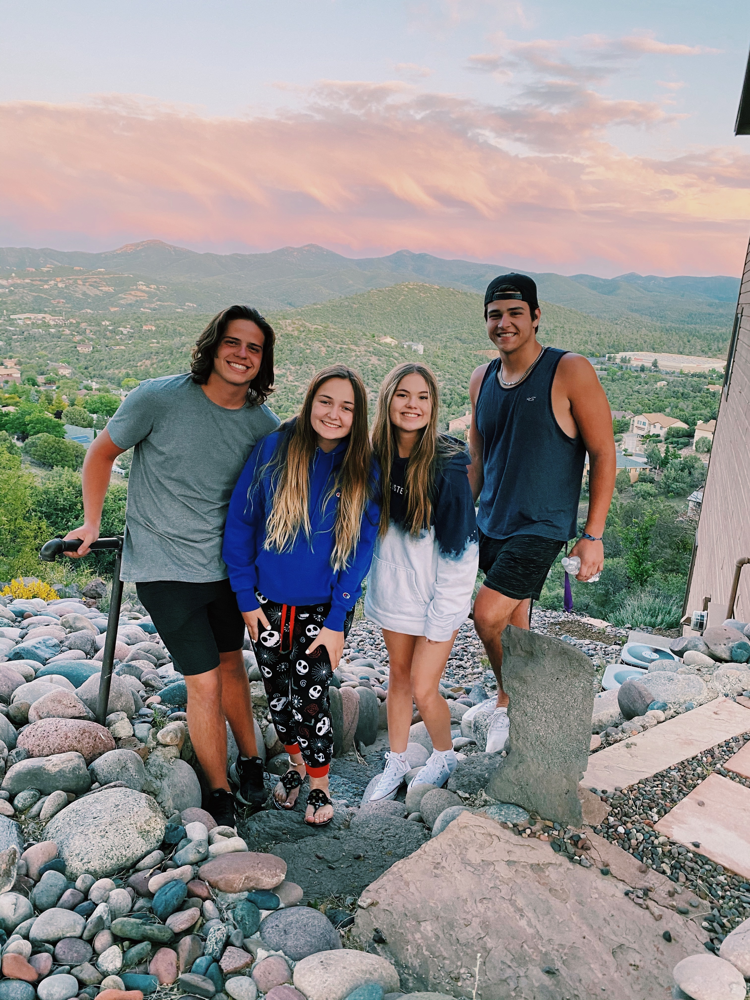

My Travels Around Arizona:
Having lived in Arizona, I have travelled around many parts of the state. Some of these cities include
Peoria (my hometown), Phoenix, Tempe, Sedona, Flagstaff, Winslow, Prescott, Scottsdale, Surprise, and Tucson.
Since I have travelled to so many areas, I figured I would just share some of my favorite places and memories.
Note: This is one of my last entries and not completely finished - will update with more info and insight.
Peoria
This is my hometown and where I have lived for basically my entire life. I went to school here and grew up dancing at a local studio. It's also close to a lot of fun things, including Lake Pleasant, where we jet ski a lot and Hurrican Harbor, a waterpark I used to lifeguard at.
Phoenix and Tempe
I went to college at ASU in Tempe, and I quite enjoyed my time there. Phoenix is also in between Tempe and Peoria, so I have been there many times, especially since it is the city center and has many events and fun things to do there. I love going to Phoenix to see ballets, Suns games, Diamondbacks games, and concerts.
Flagstaff and Prescott
These are two of the places I have been most in Arizona for trips. This is mostly because my grandma had a second cabin in Flagstaff, which she later sold and bought one in Prescott. Growing up, we would go sledding in Flagstaff a lot or just play in the snow. Prescott was a fun place, where we would hang out in the game rooms, roast marshmallows, go hiking, or kayaking. I have also been manuy times with friends and even went as a coach for my church's summer camp.
Sedona
I have been to Sedona so many times to hike and for day trips, just because it is such a beautiful place. I really love visiting the town, going to slide rock, and hiking. One of my favorite hiking spots is Forks Trail, which has 13 creeks. I would also recommend Bell Trail, which has cliff jumping, and Fossil Creek, which has a waterfall and good spots along a creek for hammocking.
 






